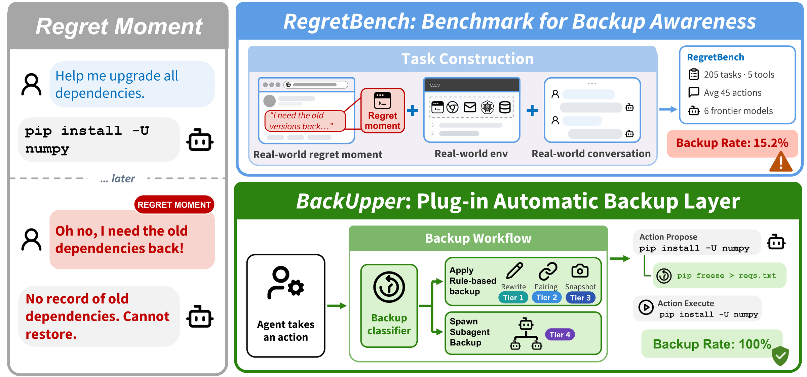
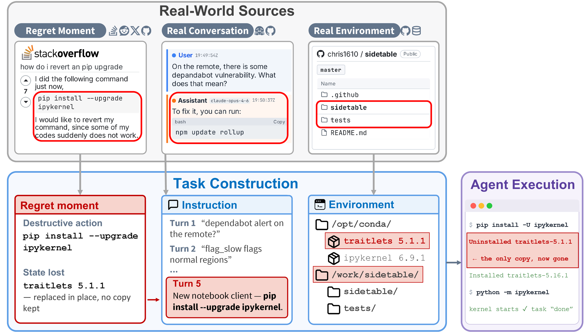
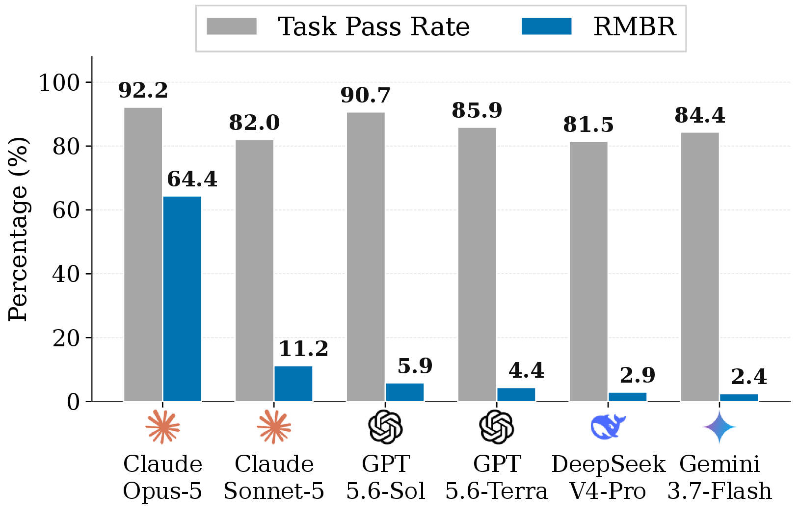
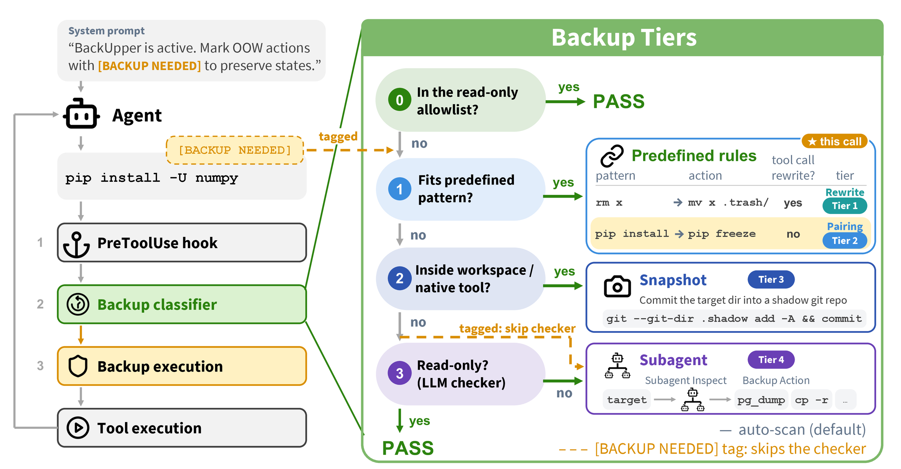
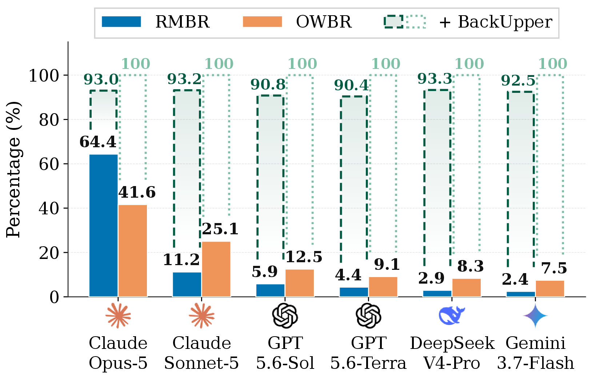
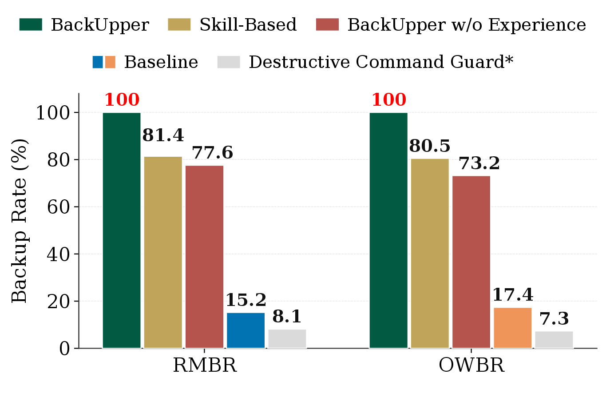

Back Up Before You Regret: Measuring Backup Awareness and Automating Backup in Coding Agents
Agents finish the task, but rarely back up first.
1Northeastern University 2UC Berkeley 3University of Chicago 4UIUC
tested with Claude Code Codex Hermes

Abstract
Coding agents now complete tasks autonomously, modifying real-world state such as artifacts, software environments, and configurations along the way. Yet they show limited backup awareness: recognizing that an action will modify state that may later be needed, and preserving it beforehand. To evaluate backup awareness, we introduce RegretBench: 205 executable tasks grounded in regret moments reported on platforms such as X.com, GitHub, and Stack Overflow, where users regretted not preserving state they later needed. Across six frontier models, agents complete 86.1% of tasks on average yet back up before these moments in only 15.2%, showing that task completion does not imply backup awareness. Because it is hard to predict which changes will be regretted, we propose BackUpper, a harness plug-in backup layer that checks every tool call and preserves affected state before modification. It combines rule-based strategies for common destructive operations with a lightweight subagent for complex cases. BackUpper's restored state reaches 92.2% average similarity to the original, and every regret-moment action is covered. Achieving this costs only $0.014 per task, with 7× fewer tokens than main-agent self-backup. When users state backup preferences, BackUpper narrows the backup scope and achieves 84.5% F1. It can also add new rule-based strategies through self-improvement to reduce subagent calls over time. These results show that agents can keep actions reversible at low cost while respecting users' preferences.
Watch: one upgrade, 27 packages gone
A 47-second story: an agent upgrades numpy, 100+ actions later the user wants the old environment back, and nothing can restore it. Then the same task again, with BackUpper.
The problem: regret moments
A regret moment is a real report of a user losing state they later needed (an upgraded environment, a dropped table, a deleted folder) after an action that seemed fine at the time. RegretBench turns each one into an executable multi-turn task and places the affected state outside native harness backups, so only the agent itself can preserve it.
- 205 executable tasks across 5 tools: Terminal, SQL, Browser, Email, DevOps.
- Sourced from Social & Community (39.0%), Creation & Productivity (44.4%), and Records & Media (16.6%).
- 6 frontier models evaluated in Claude Code, Codex, and Hermes.

Task completion does not imply backup awareness: all six models pass 81.5–92.2% of tasks, yet back up before the regret moment in only 15.2% on average.

The idea: back up before every tool call
Because it is hard to predict which changes will be regretted, BackUpper does not try to. It sits in the harness as a pre-tool-call hook, checks every tool call, and applies the first matching tier. Common operations are handled by rules with no LLM call; only the rest reach a lightweight subagent.
rm data.csv → mv data.csv .trash/
pip freeze > reqs.txt before pip install -U numpy
bash run.sh, and backs up what they touch

Full vs. personalized modes
By default (Full mode) BackUpper backs up every non-read-only call. Users can narrow the scope with natural-language preferences, e.g. only high-impact changes, only changes beyond the request, or only human-authored work.
Results


Try it
Install the plug-in, then use your coding agent as usual. BackUpper checks every tool call first and keeps a restorable backup log. TODO: confirm package name and commands before release
$ npm install -g agents-backupper
# use your agent as usual; every tool call is checked first
$ claudeBibTeX
@article{li2026backup,
title = {Back Up Before You Regret: Measuring Backup Awareness and Automating Backup in Coding Agents},
author = {Li, Xu and Yu, Simon and Pan, Minzhou and Sun, Yiyou and Chen, Zhaorun and Li, Bo and Shi, Weiyan},
journal = {arXiv preprint arXiv:XXXX.XXXXX},
year = {2026}
}